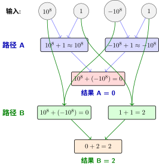

工程最佳实践#
调试与可视化技巧教会我们如何诊断和修复训练中的问题。但要成为专业的深度学习开发者，还需要掌握工程实践——如何组织代码、优化性能、保证实验可复现。
这些实践来自于工业界和学术界多年积累的经验，参考了缩放定律中的效率优化思想。
项目结构组织#
一个良好组织的项目结构能让代码更易维护、更易协作。
推荐目录结构#
my_project/
├── configs/ # 配置文件
│ ├── base.yaml
│ ├── experiment1.yaml
│ └── experiment2.yaml
├── data/ # 数据处理（不包含原始数据）
│ ├── __init__.py
│ ├── datasets.py # 自定义Dataset
│ └── transforms.py # 数据增强
├── models/ # 模型定义
│ ├── __init__.py
│ ├── layers.py # 自定义层
│ └── mnist_net.py # 具体模型
├── utils/ # 工具函数
│ ├── __init__.py
│ ├── metrics.py # 评估指标
│ ├── logger.py # 日志记录
│ └── visualization.py # 可视化工具
├── checkpoints/ # 模型检查点
├── logs/ # 训练日志
├── notebooks/ # Jupyter笔记本（探索性分析）
├── tests/ # 单元测试
├── train.py # 训练入口
├── eval.py # 评估入口
├── config.py # 配置管理
└── requirements.txt # 依赖列表
参考实现：社团的
mnist-helloworld框架采用了与此一致的项目结构。详见模型管理：从 nn.Module 到 BaseModel和数据集管理：从 DataLoader 到 BaseDataset。
为什么这样组织？#
配置管理#
集中式配置#
不要硬编码参数，使用配置文件：
# config.py：集中管理所有配置
from dataclasses import dataclass
from typing import Optional
@dataclass
class Config:
"""训练配置"""
# 数据配置
data_dir: str = "./data"
batch_size: int = 64
num_workers: int = 4
# 模型配置
model_name: str = "MNISTNet"
hidden_dim: int = 128
dropout_rate: float = 0.5
# 训练配置
num_epochs: int = 10
learning_rate: float = 0.001
weight_decay: float = 1e-4
# 优化器配置（对应{ref}`gradient-descent`中的算法）
optimizer: str = "Adam" # "SGD", "Adam", "AdamW"
momentum: float = 0.9 # 仅用于SGD
# 学习率调度（对应{ref}`learning-rate-scheduling`）
scheduler: str = "StepLR" # "StepLR", "CosineAnnealingLR"
step_size: int = 5
gamma: float = 0.1
# 系统配置
device: str = "cuda" if torch.cuda.is_available() else "cpu"
seed: int = 42 # 保证可复现
# 日志配置
log_dir: str = "./logs"
save_dir: str = "./checkpoints"
log_interval: int = 100 # 每100个batch记录一次
# 使用示例
config = Config(batch_size=128, learning_rate=0.0005)
print(f"使用设备: {config.device}")
print(f"学习率: {config.learning_rate}")
好处：
可复现：所有参数在一个地方，方便记录和分享
易修改：改配置不用改代码
支持实验：可以快速创建不同的配置进行对照实验
使用YAML配置文件#
对于复杂项目，使用YAML管理配置：
# configs/experiment.yaml
data:
batch_size: 64
num_workers: 4
augmentation:
random_crop: true
horizontal_flip: true
model:
name: "ResNet18"
pretrained: true
num_classes: 10
training:
epochs: 100
optimizer:
name: "AdamW"
lr: 0.001
weight_decay: 0.01
scheduler:
name: "CosineAnnealingLR"
T_max: 100
# 加载YAML配置
import yaml
def load_config(config_path):
with open(config_path, 'r') as f:
config = yaml.safe_load(f)
return config
# 使用
config = load_config('configs/experiment.yaml')
print(config['training']['optimizer']['name']) # "AdamW"
参考实现：
mnist-helloworld的配置系统支持 YAML + CLI 双配置模式——config.yaml定义默认值，命令行参数覆盖实验变量。详见配置系统：从硬编码到配置文件。
可复现性保证#
缩放定律中的实验需要严格的可复现性。如何做到？
固定随机种子#
def set_seed(seed=42):
"""
固定所有随机种子，保证实验可复现
对应 scaling law 中控制变量的思想
"""
import random
import numpy as np
import torch
random.seed(seed)
np.random.seed(seed)
torch.manual_seed(seed)
torch.cuda.manual_seed(seed)
torch.cuda.manual_seed_all(seed) # 如果使用多GPU
# 让cuDNN确定性运行
torch.backends.cudnn.deterministic = True
torch.backends.cudnn.benchmark = False
print(f"🎲 随机种子已设置为: {seed}")
# 在训练开始时调用
set_seed(42)
深入理解 PyTorch 的确定性行为#
上面的 set_seed 函数设置了 torch.backends.cudnn.deterministic = True 和 torch.backends.cudnn.benchmark = False。但你可能好奇：PyTorch 默认为什么不保证确定性的结果？打开确定性会有什么代价？
为什么 PyTorch 默认不确定？#
根源来自两个层面的叠加：浮点数的数学特性 × GPU 的并行执行方式。
第一层：浮点数为什么不满足结合律？#
先看一个简单的例子：
>>> 1e20 + (-1e20) + 1.0
1.0
>>> 1e20 + ((-1e20) + 1.0)
0.0 # !?
第一个式子 \((10^{20} - 10^{20}) + 1 = 0 + 1 = 1\)，结果正确。
第二个式子 \(10^{20} + (-10^{20} + 1)\) 在数学上也等于 1，但计算机的浮点数精度有限——-1e20 + 1.0 的结果仍然是 -1e20（因为 1.0 相比 1e20 太小，被"吃掉"了），所以最终结果是 \(10^{20} - 10^{20} = 0\)。
精度有限 不等于 精度可控
并不是浮点数运算"容易出错"，而是误差累积对计算顺序高度敏感。\((a + b) + c\) 和 \(a + (b + c)\) 在整数运算中永远相等，但在浮点数中可能不同——这个差异在每次加法中只有最后几位，但一个卷积核要做 \(K^2 \times C_{in}\) 次乘加，再乘以几十万个位置，微小差异被反复放大。
第二层：GPU 并行如何放大这个问题？#
GPU 的计算模式是 SIMT（Single Instruction, Multiple Threads）——数万个 CUDA 核心同时执行同一指令，但处理不同的数据。问题在于：并行计算不保证归并顺序。
看一个具体的数字例子——同样四个数 \((10^8, 1, -10^8, 1)\)，不同的归约顺序产生不同的结果。这种差异在矩阵乘法（卷积、全连接、注意力机制都靠它）中会被反复放大：

GPU 并行归并的不确定性（一个夸张的例子）
为什么路径 A 和路径 B 的结果不同？
路径 A： 先做 \(10^8 + 1\)：\(10^8\) 远大于 \(1\)，在 float32 精度下 \(1\) 被舍入掉了（相当于 \(\approx 10^8\)），另一侧 \(-10^8 + 1 \approx -10^8\)，最终 \(10^8 + (-10^8) = 0\)。
路径 B： 先做 \(10^8 + (-10^8) = 0\)（大数先抵消），另一侧 \(1 + 1 = 2\)，最终 \(0 + 2 = 2\)。
因此在这种体系下：
归并顺序不同，最终结果在最低有效位上产生差异。这个差异在单个操作中微不足道，但卷积核要做 \(K^2 \times C_{in}\) 次乘加，再乘以几十万个位置——微小差异被反复放大。
数百个 CUDA 核心同时计算矩阵乘法的不同分块，每个分块内部的累加顺序取决于线程调度时机——GPU 给哪个线程组分配哪个计算单元，每次运行都可能不同。这导致了三个层面的不确定性源：
不确定性源 |
解释 |
影响程度 |
|---|---|---|
原子操作顺序 |
多个线程同时写同一个内存地址时，写入选顺序不定 |
小（仅最后几位） |
cuDNN 算法选择 |
cuDNN 默认会 benchmark 最快算法，但不同算法产生结果有微小差异 |
中（不同算法间差异可能更大） |
浮点数累加顺序 |
矩阵乘法中的部分和以不同顺序相加（树形 vs 串行） |
大（随层数加深累积） |
一句话总结：每次运行，GPU 线程的调度顺序都不同，浮点数对不同顺序敏感——所以同样的代码跑两次，结果在最后几位上不一样。这不是 bug，而是并行浮点计算的物理常态。
PyTorch 中的三个确定性开关#
开关 |
默认值 |
作用 |
影响 |
|---|---|---|---|
|
|
cuDNN 不再自动搜索最快算法，而是使用固定算法 |
训练速度可能下降 10~50% |
|
|
cuDNN 使用确定性算法（避免原子操作的不确定性） |
部分操作（如 |
|
|
让更多 PyTorch 操作（如索引、插值）使用确定性实现 |
部分操作不受支持时会抛异常 |
import torch
# 设置前两个开关（和 set_seed 中一样）
torch.backends.cudnn.benchmark = False
torch.backends.cudnn.deterministic = True
# 可选：更严格的确定性模式（PyTorch 1.7+）
# 开启后，不支持确定性实现的操作会直接报错，而不是静默运行
# torch.use_deterministic_algorithms(True)
什么时候该开，什么时候不该开？#
场景 |
推荐 |
原因 |
|---|---|---|
论文实验 / 学术研究 |
✅ 开启确定性 |
实验必须可复现，这是学术底线 |
调试代码 bug |
✅ 开启 |
每次运行结果不同，无法定位 bug |
写单元测试 |
✅ 开启 |
测试断言需要固定输出 |
日常模型训练 |
❌ 不开 |
1% 的随机波动不影响最终收敛，但 30% 的速度减慢实实在在 |
生产环境推理 |
❌ 不开 |
推理速度比毫秒级一致性更重要 |
大规模分布式训练 |
❌ 不开 |
分布式同步本身就是随机的，开确定性没用 |
从不确定性中学到的启示
深度学习的训练过程本身就是一个随机过程：我们依赖随机梯度下降（SGD）、随机初始化、随机打乱数据来探索参数空间。确定性模式只是保证这个随机过程的每次运行完全一致，而不是消除随机性本身。
换句话说：确定性 ≠ 模型更好，确定性 = 同样的随机种子跑出同样的结果。
验证是否真的确定#
写一个简单测试来验证你的实验是否真正可复现：
def test_reproducibility():
"""验证模型在相同输入下是否产生完全相同的结果"""
import torch
import torch.nn as nn
# 固定所有随机源
torch.manual_seed(42)
torch.backends.cudnn.deterministic = True
torch.backends.cudnn.benchmark = False
# 创建模型并运行
model = nn.Linear(10, 5)
x = torch.randn(1, 10)
output_1 = model(x)
# 重置种子，完全重复
torch.manual_seed(42)
model = nn.Linear(10, 5) # 重新初始化
x = torch.randn(1, 10)
output_2 = model(x)
# 断言完全相等（不只是近似）
assert torch.equal(output_1, output_2), "❌ 实验不可复现！"
print("✅ 实验可复现")
如果你通过了这个测试，你的实验就可以放心地写入论文或提交给合作者了。
实验记录#
import json
import os
from datetime import datetime
class ExperimentLogger:
"""实验记录器：保存所有实验信息"""
def __init__(self, config, experiment_name=None):
self.timestamp = datetime.now().strftime("%Y%m%d_%H%M%S")
self.experiment_name = experiment_name or f"exp_{self.timestamp}"
# 创建实验目录
self.exp_dir = os.path.join("experiments", self.experiment_name)
os.makedirs(self.exp_dir, exist_ok=True)
os.makedirs(os.path.join(self.exp_dir, "checkpoints"), exist_ok=True)
# 保存配置
self.config_path = os.path.join(self.exp_dir, "config.json")
with open(self.config_path, 'w') as f:
json.dump(vars(config), f, indent=2)
# 保存代码版本（如果使用git）
self._save_git_info()
print(f"📁 实验目录: {self.exp_dir}")
def _save_git_info(self):
"""记录git版本信息"""
import subprocess
try:
git_hash = subprocess.check_output(['git', 'rev-parse', 'HEAD']).decode().strip()
git_branch = subprocess.check_output(['git', 'rev-parse', '--abbrev-ref', 'HEAD']).decode().strip()
git_info = {
'hash': git_hash,
'branch': git_branch,
'timestamp': self.timestamp
}
with open(os.path.join(self.exp_dir, "git_info.json"), 'w') as f:
json.dump(git_info, f, indent=2)
except:
print("⚠️ 无法获取git信息")
def save_metrics(self, metrics):
"""保存训练指标"""
metrics_path = os.path.join(self.exp_dir, "metrics.json")
with open(metrics_path, 'w') as f:
json.dump(metrics, f, indent=2)
def get_checkpoint_path(self, epoch):
"""获取检查点保存路径"""
return os.path.join(self.exp_dir, "checkpoints", f"epoch_{epoch}.pt")
参考实现：
mnist-helloworld的ExperimentManager实现了类似功能，并增加了 YOLO 风格自动实验编号（runs/exp1、runs/exp2…）和断点续训支持。详见实验管理：从手动记录到自动追踪。
性能优化#
缩放定律 告诉我们，计算效率直接影响实验迭代速度。
数据加载优化#
# 优化前（慢）
train_loader = DataLoader(dataset, batch_size=64, shuffle=True)
# 优化后（快）
train_loader = DataLoader(
dataset,
batch_size=64,
shuffle=True,
num_workers=4, # 多进程加载数据，建议设为CPU核心数
pin_memory=True, # 将数据固定在页锁定内存，加速CPU到GPU传输
persistent_workers=True, # 保持worker进程存活，避免每次epoch重新创建
prefetch_factor=2 # 每个worker预取2个batch
)
性能对比：
配置 |
训练时间（每epoch） |
说明 |
|---|---|---|
num_workers=0 |
120s |
主进程加载，成为瓶颈 |
num_workers=4, pin_memory=False |
80s |
并行加载但传输慢 |
num_workers=4, pin_memory=True |
45s |
最优配置 |
混合精度训练#
现代 GPU（V100及以上）支持 Tensor Cores，使用混合精度可以加速2-3倍：
from torch.cuda.amp import autocast, GradScaler
# 初始化梯度缩放器（处理梯度下溢）
scaler = GradScaler()
for data, target in train_loader:
data, target = data.to(device), target.to(device)
optimizer.zero_grad()
# 使用autocast自动选择精度（FP16/FP32）
with autocast():
output = model(data)
loss = criterion(output, target)
# 缩放梯度避免下溢，然后反向传播
scaler.scale(loss).backward()
# 梯度裁剪（如果需要）
scaler.unscale_(optimizer)
torch.nn.utils.clip_grad_norm_(model.parameters(), max_norm=1.0)
# 更新参数
scaler.step(optimizer)
scaler.update()
原理：
FP16（半精度）：占内存少、计算快，但范围小容易溢出
FP32（单精度）：范围大、精度高，但计算慢
混合精度：前向/反向用FP16，参数更新用FP32，兼顾速度和稳定性
梯度累积#
当GPU内存不足以支持大批量时，使用梯度累积：
accumulation_steps = 4 # 累积4个batch再更新
for batch_idx, (data, target) in enumerate(train_loader):
data, target = data.to(device), target.to(device)
# 前向传播
output = model(data)
# 损失除以累积步数（保证梯度大小一致）
loss = criterion(output, target) / accumulation_steps
loss.backward()
# 每accumulation_steps步更新一次参数
if (batch_idx + 1) % accumulation_steps == 0:
optimizer.step()
optimizer.zero_grad()
print(f"更新参数: batch {batch_idx}")
# 处理最后不足一个累积周期的梯度
if (batch_idx + 1) % accumulation_steps != 0:
optimizer.step()
optimizer.zero_grad()
效果：batch_size=16，accumulation_steps=4，等效batch_size=64
编译模型（PyTorch 2.0+）#
# PyTorch 2.0引入torch.compile，可以显著加速
model = MyModel()
# 编译模型（第一次运行会稍慢，后续更快）
compiled_model = torch.compile(model)
# 正常训练
for data, target in train_loader:
output = compiled_model(data)
# ...
加速效果：
训练：通常提速10-50%
推理：通常提速20-100%
模型保存与加载的最佳实践#
保存检查点#
def save_checkpoint(model, optimizer, scheduler, epoch, best_acc, path):
"""
保存完整训练状态，支持断点续训
"""
checkpoint = {
'epoch': epoch,
'model_state_dict': model.state_dict(),
'optimizer_state_dict': optimizer.state_dict(),
'scheduler_state_dict': scheduler.state_dict() if scheduler else None,
'best_acc': best_acc,
}
torch.save(checkpoint, path)
print(f"✅ 检查点已保存: {path}")
def load_checkpoint(path, model, optimizer=None, scheduler=None):
"""
加载训练状态，恢复训练
"""
checkpoint = torch.load(path)
model.load_state_dict(checkpoint['model_state_dict'])
if optimizer and 'optimizer_state_dict' in checkpoint:
optimizer.load_state_dict(checkpoint['optimizer_state_dict'])
if scheduler and 'scheduler_state_dict' in checkpoint:
scheduler.load_state_dict(checkpoint['scheduler_state_dict'])
epoch = checkpoint.get('epoch', 0)
best_acc = checkpoint.get('best_acc', 0.0)
print(f"✅ 检查点已加载，从epoch {epoch + 1}继续训练")
return epoch, best_acc
保存最佳模型#
# 训练循环中的早停和模型保存
best_acc = 0.0
patience = 10 # 早停耐心值
epochs_no_improve = 0
for epoch in range(num_epochs):
train_loss, train_acc = train_epoch(...)
val_loss, val_acc = validate(...)
# 保存最佳模型
if val_acc > best_acc:
best_acc = val_acc
epochs_no_improve = 0
torch.save({
'epoch': epoch,
'model_state_dict': model.state_dict(),
'best_acc': best_acc,
'config': config,
}, 'best_model.pt')
print(f"💾 保存最佳模型，验证准确率: {best_acc:.2f}%")
else:
epochs_no_improve += 1
print(f"⏳ 验证准确率未提升，耐心值: {epochs_no_improve}/{patience}")
# 早停检查（对应{ref}`early-stopping`）
if epochs_no_improve >= patience:
print(f"🛑 早停触发！连续{patience}个epoch未提升")
break
下一步#
恭喜你完成了 PyTorch 实践章节的全部内容！回顾本章学到的：
你已经具备了从理论到实践的完整能力。下一步建议：
深入研究：回到神经网络基础：从理论到架构学习更复杂的架构
前沿探索：阅读论文，复现SOTA模型
结语：从入门到实践 中，我们整理了更多学习资源，帮助你在深度学习之路上继续前进。
贡献者与修订历史
查看详细修订记录
-
ff8ec352026-06-13 - Heyan Zhu: feat: add pooling, dataset-prep, albumentations, and deterministic mode docs -
b55c3842026-05-01 - Heyan Zhu: docs: fix document cross-references and add anchor tags -
0cdb1e42026-04-29 - Heyan Zhu: feat: add model-serving chapter and update related content -
b20ef3e2026-04-28 - Heyan Zhu: docs: update pytorch practice section with detailed explanations and code examples -
0c291d72025-12-10 - Heyan Zhu: docs: restructure course materials and add new content